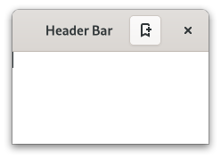

Gtk.HeaderBar¶
Example¶
- Subclasses
None
Methods¶
- Inherited
Gtk.Widget (181), GObject.Object (37), Gtk.Accessible (15), Gtk.Buildable (1)
- Structs
class |
|
|
|
|
|
|
|
|
|
|
|
|
Virtual Methods¶
Properties¶
- Inherited
Name |
Type |
Flags |
Short Description |
|---|---|---|---|
r/w |
|||
r/w/en |
|||
r/w/en |
Signals¶
- Inherited
Fields¶
- Inherited
Class Details¶
- class Gtk.HeaderBar(**kwargs)¶
- Bases
- Abstract
No
GtkHeaderBaris a widget for creating custom title bars for windows.An example
Gtk.HeaderBarGtkHeaderBaris similar to a horizontalGtkCenterBox. It allows children to be placed at the start or the end. In addition, it allows the window title to be displayed. The title will be centered with respect to the width of the box, even if the children at either side take up different amounts of space.GtkHeaderBarcan add typical window frame controls, such as minimize, maximize and close buttons, or the window icon.For these reasons,
GtkHeaderBaris the natural choice for use as the custom titlebar widget of aGtkWindow(see [method`Gtk`.Window.set_titlebar]), as it gives features typical of titlebars while allowing the addition of child widgets.The
GtkHeaderBarimplementation of theGtkBuildableinterface supports adding children at the start or end sides by specifying “start” or “end” as the “type” attribute of a<child>element, or setting the title widget by specifying “title” value.By default the
GtkHeaderBaruses aGtkLabeldisplaying the title of the window it is contained in as the title widget, equivalent to the following UI definition:``xml <object class=”GtkHeaderBar”>
- <property name=”title-widget”>
- <object class=”GtkLabel”>
<property name=”label” translatable=”yes”>Label</property> <property name=”single-line-mode”>True</property> <property name=”ellipsize”>end</property> <property name=”width-chars”>5</property> <style>
<class name=”title”/>
</style>
</object>
</property>
</object> ``
- CSS nodes
`` headerbar ╰── windowhandle
- ╰── box
├── box.start │ ├── windowcontrols.start │ ╰── [other children] ├── [Title Widget] ╰── box.end
├── [other children] ╰── windowcontrols.end
A
GtkHeaderBar’s CSS node is calledheaderbar. It contains awindowhandlesubnode, which contains aboxsubnode, which contains twoboxsubnodes at the start and end of the header bar, as well as a center node that represents the title.Each of the boxes contains a
windowcontrolssubnode, see [class`Gtk`.WindowControls] for details, as well as other children.- Accessibility
GtkHeaderBaruses theGtk.AccessibleRole.GROUProle.- classmethod new()[source]¶
- Returns
a new
GtkHeaderBar- Return type
Creates a new
GtkHeaderBarwidget.
- get_show_title_buttons()[source]¶
-
Returns whether this header bar shows the standard window title buttons.
- get_title_widget()[source]¶
- Returns
the title widget of the header
- Return type
Gtk.WidgetorNone
Retrieves the title widget of the header.
See [method`Gtk`.HeaderBar.set_title_widget].
- pack_end(child)[source]¶
- Parameters
child (
Gtk.Widget) – theGtkWidgetto be added to self
Adds child to self, packed with reference to the end of the self.
- pack_start(child)[source]¶
- Parameters
child (
Gtk.Widget) – theGtkWidgetto be added to self
Adds child to self, packed with reference to the start of the self.
- remove(child)[source]¶
- Parameters
child (
Gtk.Widget) – the child to remove
Removes a child from the
GtkHeaderBar.The child must have been added with [method`Gtk`.HeaderBar.pack_start], [method`Gtk`.HeaderBar.pack_end] or [method`Gtk`.HeaderBar.set_title_widget].
- set_decoration_layout(layout)[source]¶
-
Sets the decoration layout for this header bar.
This property overrides the [property`Gtk`.Settings:gtk-decoration-layout] setting.
There can be valid reasons for overriding the setting, such as a header bar design that does not allow for buttons to take room on the right, or only offers room for a single close button. Split header bars are another example for overriding the setting.
The format of the string is button names, separated by commas. A colon separates the buttons that should appear on the left from those on the right. Recognized button names are minimize, maximize, close and icon (the window icon).
For example, “icon:minimize,maximize,close” specifies an icon on the left, and minimize, maximize and close buttons on the right.
- set_show_title_buttons(setting)[source]¶
-
Sets whether this header bar shows the standard window title buttons.
- set_title_widget(title_widget)[source]¶
- Parameters
title_widget (
Gtk.WidgetorNone) – a widget to use for a title
Sets the title for the
GtkHeaderBar.When set to
None, the headerbar will display the title of the window it is contained in.The title should help a user identify the current view. To achieve the same style as the builtin title, use the “title” style class.
You should set the title widget to
None, for the window title label to be visible again.
Property Details¶
- Gtk.HeaderBar.props.decoration_layout¶
-
The decoration layout for buttons.
If this property is not set, the [property`Gtk`.Settings:gtk-decoration-layout] setting is used.
- Gtk.HeaderBar.props.show_title_buttons¶
- Name
show-title-buttons- Type
- Default Value
- Flags
Whether to show title buttons like close, minimize, maximize.
Which buttons are actually shown and where is determined by the [property`Gtk`.HeaderBar:decoration-layout] property, and by the state of the window (e.g. a close button will not be shown if the window can’t be closed).
- Gtk.HeaderBar.props.title_widget¶
- Name
title-widget- Type
- Default Value
- Flags